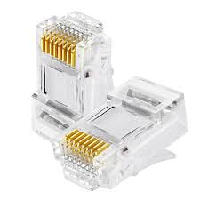
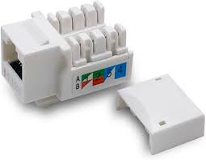

Componente Pasivo
RJ45
Es una interfaz física comúnmente utilizada para conectar redes de computadoras con cableado estructurado.
Posee ocho pines o conexiones eléctricas, que normalmente se usan como extremos de cables de par trenzado.

Componente Pasivo
Jacks o Keystone
Un conector Keystone es un conector hembra que se utiliza en comunicaciones de audio, vídeo y datos.
Sirve como receptáculo para un enchufe correspondiente, que es un conector macho del mismo tipo que el conector.
Componente Pasivo
Cable UTP
se encarga de transmitir información de manera rápida y eficaz y se utiliza para redes domésticas y conexiones cortas.